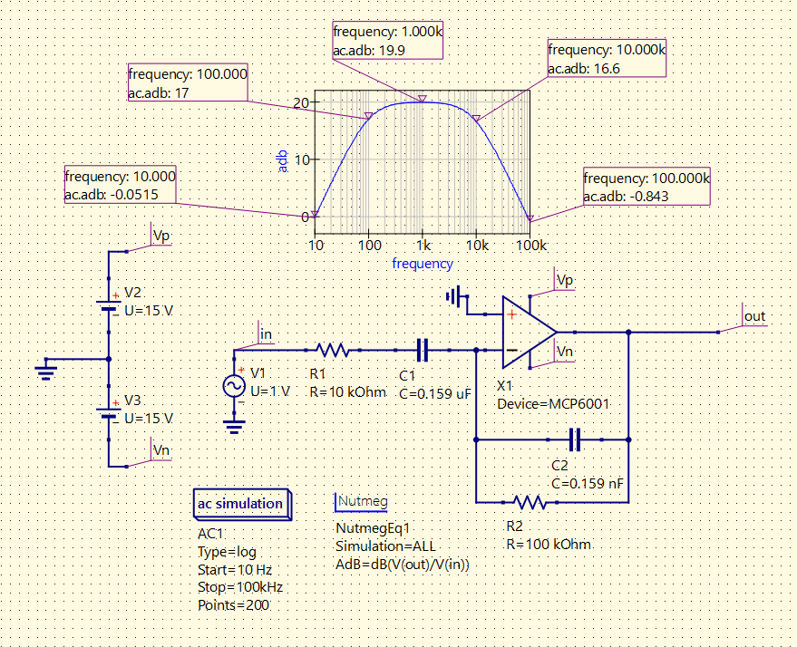

Inverting Bandpass Op Amp Circuit
This is an inverting bandpass filter circuit that uses the MCP6001 op amp. Provided with a starter file .sch that contained just the op amp, power supplies, and sinusoidal voltage source, I finished implementing the filter using two resistors and two capacitors. I rearranged the corner frequency equation we discussed in class to get the capacitor values and chose the resistor values so that the circuit would have a gain of 10. As showcased in the above image, the circuit creates a bandpass filter where the lower cutoff frequency is 17dB at 100Hz and the upper cutoff frequency is 16.6dB (rounds to 17) at 10kHz. This demonstrates that I have learned how to solve this circuit by hand and create an accurate virtual simulation of the circuit. I am now able to do the same with other types of circuits, not just bandpass filters.